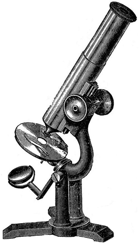

ANXIETE
"J'ai eu beaucoup de problèmes dans ma vie dont la plupart ne sont jamais arrivés !"
Mark TWAIN
Mark TWAIN
Du temps des chasseurs-cueilleurs, la survie de l'espèce dépendait de sa capacité bien utile à appréhender les menaces multiples de son environnement hostile. À moins de se prendre pour un Christopher McCandless dans Into the Wild, nul besoin aujourd'hui d'angoisser nuit et jour pour sa survie. Et pourtant, comme dirait Darwin, "le fait d’avoir peur de tout ennemi potentiel est certainement une qualité instinctive".
L’anxiété est un état qui se caractérise par un sentiment d'appréhension, de tension, de malaise, d'insécurité voire de terreur face à un péril de nature indéterminée. Elle fait partie de la nature humaine et est une réponse normale au stress quotidien. L'anxieux l'exprime généralement sous les termes de nervosité ou de soucis. Le souffrant se sent alors envahi par ce sentiment d’inconfort ou de peur secondaire à une anticipation excessive d’éventuelles difficultés avant même que "les problèmes" ne soient survenus, ou avant même qu'il ait repéré précisément ce qu’il redoute. On parle de " peur sans objet".
L'anxiété est souvent utilisée comme un synonyme du stress. Comme lui, elle engendre également des manifestations autant psychologiques que somatiques et devient anormale quand elle n'est rattachée à aucune cause évidente ou identifiable et quand elle devient chronique. Si des similitudes existent, comment peut-on alors différencier l'anxiété du stress ? Cette différence se marque sur le plan de la cognition et notamment sur l'anticipation constante d'un évènement, d'une situation particulière à l'inverse du stress qui cognitivement est la réponse et non l'anticipation de la situation.
les troubles anxieux peuvent se traduire de manières différentes selon la personne et peuvent survenir à tout âge. D'après la Haute autorité de santé, 15 % des adultes de 18 à 65 ans présentent des troubles anxieux sévères sur une année donnée, et 21 % en présenteront au cours de leur vie.Être anxieux engendre le plus souvent des difficultés de fonctionnement qui vont d’une gêne ponctuelle à un handicap sévère. Le ressenti particulier décrit ici fait partie de la famille des troubles anxieux qui est constituée de diverses pathologies comme entre autre :
L’anxiété est un état qui se caractérise par un sentiment d'appréhension, de tension, de malaise, d'insécurité voire de terreur face à un péril de nature indéterminée. Elle fait partie de la nature humaine et est une réponse normale au stress quotidien. L'anxieux l'exprime généralement sous les termes de nervosité ou de soucis. Le souffrant se sent alors envahi par ce sentiment d’inconfort ou de peur secondaire à une anticipation excessive d’éventuelles difficultés avant même que "les problèmes" ne soient survenus, ou avant même qu'il ait repéré précisément ce qu’il redoute. On parle de " peur sans objet".
L'anxiété est souvent utilisée comme un synonyme du stress. Comme lui, elle engendre également des manifestations autant psychologiques que somatiques et devient anormale quand elle n'est rattachée à aucune cause évidente ou identifiable et quand elle devient chronique. Si des similitudes existent, comment peut-on alors différencier l'anxiété du stress ? Cette différence se marque sur le plan de la cognition et notamment sur l'anticipation constante d'un évènement, d'une situation particulière à l'inverse du stress qui cognitivement est la réponse et non l'anticipation de la situation.
les troubles anxieux peuvent se traduire de manières différentes selon la personne et peuvent survenir à tout âge. D'après la Haute autorité de santé, 15 % des adultes de 18 à 65 ans présentent des troubles anxieux sévères sur une année donnée, et 21 % en présenteront au cours de leur vie.Être anxieux engendre le plus souvent des difficultés de fonctionnement qui vont d’une gêne ponctuelle à un handicap sévère. Le ressenti particulier décrit ici fait partie de la famille des troubles anxieux qui est constituée de diverses pathologies comme entre autre :
- le trouble anxieux généralisé
- l'état de stress post traumatique
- la phobie spécifique
- le trouble obsessionnel compulsif
- le trouble panique
- l'état de stress aigu (burnout)
- la phobie sociale
- etc.
Il n'y a pas de cause unique expliquant le développement et l'apparition de problèmes anxieux. Il est considéré exister une interaction entre des facteurs prédisposants (succeptibilité individuelle, génétique et psychologique, etc.), précipitants (traumatisme, santé, stresseur psychosocial, etc.) et d'entretien. Anthony Robbins, célèbre coach américain, a l’habitude de dire :"Si tu restes dans ta tête, tu prends perpette". Ainsi, l'anxieux paie cher ces efforts constants par une tension quasi-permanente souvent source d’une dégradation de sa qualité de vie et pouvant devenir pathologique. Ce versant pathologique de l’anxiété qui s’installe, peut se chroniciser et placer le sujet dans une souffrance psychique qui l’invalide tant dans ses rapports interpersonnels que dans son rapport à lui-même.

La personne manifeste alors de la crainte diffuse en absence de danger identifiable et s'épuise face à cette anticipation négative continue. Elle se sent restreint, bloquée ou au contraire hyper vigilante, hyperactive. Par le biais d'une manifestation d'inquiétudes débilitantes, le sujet s'évertue, avec excès et inefficacité, à lutter contre des schémas cognitifs suractivés, imperméables et rigides qui sont bien souvent issus de fausses croyances, d'expériences négatives voire traumatiques.
L'anticipateur hyperthrophie régulièrement des évènements imaginaires ! Cette construction d'inquiétudes peut être cependant compris comme une tentative de résolution d'un problème réel ou fictif, dont le dénouement est incertain. Etonnament, l'anxieux est expert pour identifier les ennuis potentiels mais se sent dans l'incapacité de résoudre ce qu'il projette, notament par la construction de pensées négatives. Cela peut engendrer une destabilisation dans son estime, une dévalorisation jusqu'à pouvoir générer un état dépressif. Ces réactions affectives sont donc provoquées par l'interprétation biaisée que l'individu fait de la situation, plutôt que par sa réalité objective.
Ici, l’hypnose permet de travailler tant sur le fond que la forme anxieuse, que soit issu d’apprentissages de l'éducation, du passé ou de l’environnement, et de trouver des façons de penser plus sereines, plus adaptées. Un travail par l’hypnose sur les peurs, sur les anticipations ou encore sur le lâcher-prise est préconisé pour réduire les œillères anxiogènes que porte le sujet.
L'anticipateur hyperthrophie régulièrement des évènements imaginaires ! Cette construction d'inquiétudes peut être cependant compris comme une tentative de résolution d'un problème réel ou fictif, dont le dénouement est incertain. Etonnament, l'anxieux est expert pour identifier les ennuis potentiels mais se sent dans l'incapacité de résoudre ce qu'il projette, notament par la construction de pensées négatives. Cela peut engendrer une destabilisation dans son estime, une dévalorisation jusqu'à pouvoir générer un état dépressif. Ces réactions affectives sont donc provoquées par l'interprétation biaisée que l'individu fait de la situation, plutôt que par sa réalité objective.
Ici, l’hypnose permet de travailler tant sur le fond que la forme anxieuse, que soit issu d’apprentissages de l'éducation, du passé ou de l’environnement, et de trouver des façons de penser plus sereines, plus adaptées. Un travail par l’hypnose sur les peurs, sur les anticipations ou encore sur le lâcher-prise est préconisé pour réduire les œillères anxiogènes que porte le sujet.
EN RELATION


DISSOCIATION
SYMPTÔME
PHOBIE
PERSONNALITE
CROYANCE
PEUR